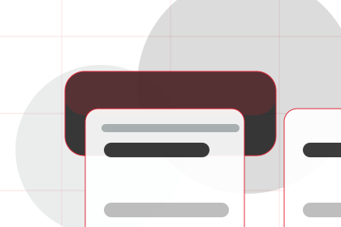
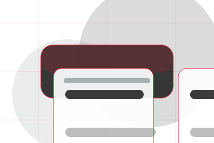
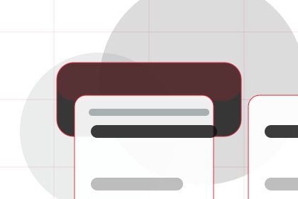
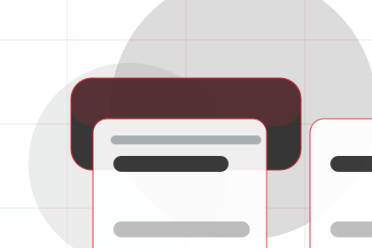
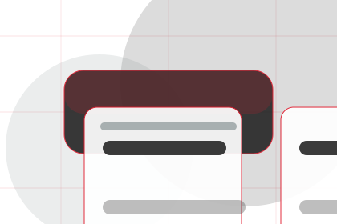
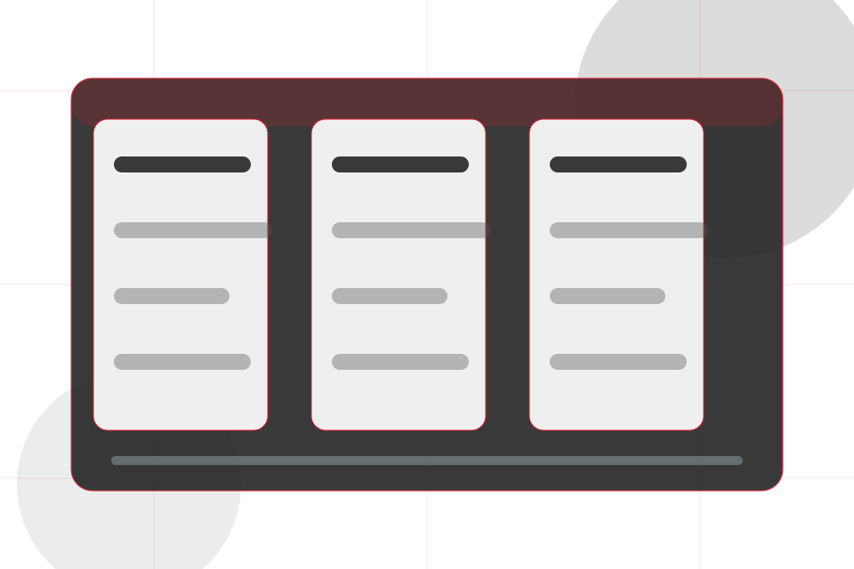
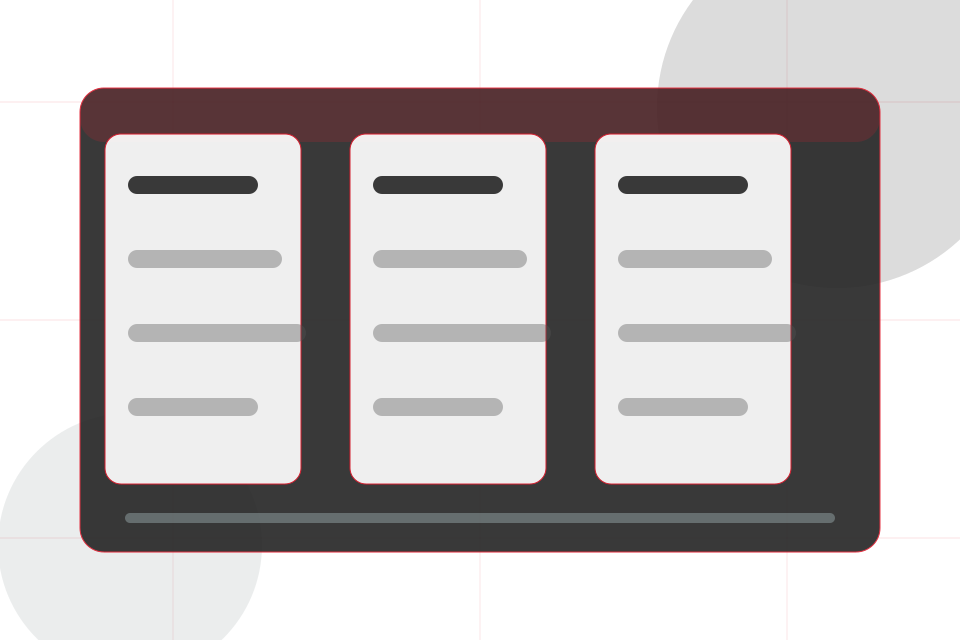
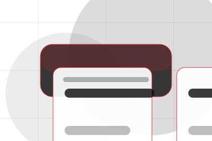
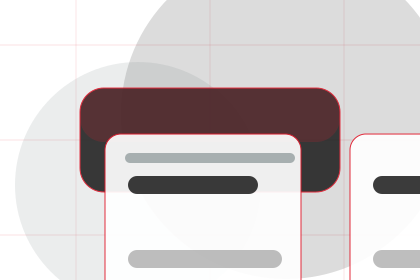
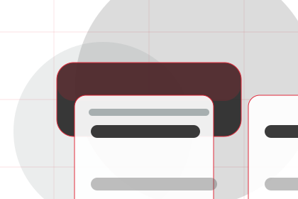

Firm
Open the firm route for engineers, standards, credentials so engineering, technical systems & specialist services visitors can compare context, proof, and next steps.
Open FirmHome / 01
Home opens as a clear engineering decision hub: what Core offers, who it helps, why it matters, and which route to take first.
The first screen combines positioning, proof, primary action, and fast internal navigation, so people can act immediately or compare the rest of the home route with context.
Red-rule technical hero
Select the closest route and Core keeps the next step, proof, and follow-up expectation aligned with reliability and standards.

Site atlas
This homepage is the working index for engineering, technical systems & specialist services: it explains the offer, points to every deeper page, and keeps the final action visible without making the visitor hunt.
An engineering authority site with editorial project blocks, red rules, technical proof, and expert enquiry. The page links problem, promise, services, process, proof, questions, support, legal routes, and conversion paths into one clear decision map.
Open the firm route for engineers, standards, credentials so engineering, technical systems & specialist services visitors can compare context, proof, and next steps.
Open FirmOpen the services route for design, testing, maintenance so engineering, technical systems & specialist services visitors can compare context, proof, and next steps.
Open ServicesOpen the systems route for types, mechanical, electrical so engineering, technical systems & specialist services visitors can compare context, proof, and next steps.
Open SystemsOpen the projects route for portfolio, specification, execution so engineering, technical systems & specialist services visitors can compare context, proof, and next steps.
Open ProjectsOpen the process route for assess, design, model so engineering, technical systems & specialist services visitors can compare context, proof, and next steps.
Open ProcessOpen the expertise route for specialisms, tools, methods so engineering, technical systems & specialist services visitors can compare context, proof, and next steps.
Open ExpertiseOpen the resources route for specs, papers, guides so engineering, technical systems & specialist services visitors can compare context, proof, and next steps.
Open ResourcesOpen the questions route for scope, timelines, compliance so engineering, technical systems & specialist services visitors can compare context, proof, and next steps.
Open QuestionsOpen the contact route for enquiry, upload, scope so engineering, technical systems & specialist services visitors can compare context, proof, and next steps.
Open ContactReview the local assets, icons, OG images, and static handoff materials used by Core.
Open Asset SystemUse the full sitemap to recover any route and verify the whole Core structure.
Open SitemapRead the privacy route before sending personal details through the static form.
Open PrivacyManage consent and understand the privacy-safe analytics approach.
Open CookiesHome / 03
Reliability shows what changes after the work: clearer decisions, visible progress, and proof points that connect the offer to real outcomes.
The layout connects before-and-after thinking with measured outcomes, making the result easy to scan without promising what the business cannot guarantee.
Open ServicesThe uncertainty, delay, or missed opportunity visitors bring into reliability.

The clearer, safer, or more valuable state Core is designed to support.

The visible cue that connects reliability to a believable decision, not a loose claim.
Home / 04
Promise defines the better state Core is built to create, with enough detail to make the promise believable.
An engineering authority site with editorial project blocks, red rules, technical proof, and expert enquiry. The section grounds that direction in concrete benefits, visible tradeoffs, and a next route visitors can use when the promise feels relevant.
Open SystemsPromise defines what becomes clearer, easier, or safer when Core is the chosen route.
The benefit is tied to reliability and standards, not a vague quality claim.

Visitors get a linked path to compare the promise against services, standards, or examples.
Home / 05
Services explains the practical scope, best-fit situations, and expected outcome so engineering visitors can compare options without decoding jargon.
The section keeps the offer concrete: what is included, who it is best for, what decision it supports, and which linked route gives the deeper detail.
Open ServicesWho should use services and when it belongs in the home journey.
The practical benefit visitors should expect after choosing this route.

Where to compare details, pricing, support, or contact options before committing.
Red-rule technical hero
Select the closest route and Core keeps the next step, proof, and follow-up expectation aligned with reliability and standards.
Home / 06
Systems adds technical context to the home route, using the engineering project journal structure to support reliability and standards before visitors choose a next step.
Core uses engineering proof cards and focused copy to make the decision easier to scan, aligning the section with reliability and standards rather than filling space.
Open ProcessSystems gives the page a specific angle instead of repeating the navigation label.
The engineering proof cards show what to compare, what to avoid, and what matters most for engineering, technical systems & specialist services visitors.
The final cue points to a useful internal route so the section keeps the journey moving.
Home / 07
Projects adds technical context to the home route, using the engineering project journal structure to support reliability and standards before visitors choose a next step.
Core uses engineering proof cards and focused copy to make the decision easier to scan, aligning the section with reliability and standards rather than filling space.
Open Expertise
Projects gives the page a specific angle instead of repeating the navigation label.


Home / 08
Standards gives the proof layer for home: standards, evidence, and reassurance that make the next decision feel grounded.
Instead of relying on vague claims, Core presents visible standards, process cues, and proof artifacts that help engineering visitors judge fit.
Open ResourcesVisible proof that helps visitors believe the claims behind standards.

The quality, safety, or operating expectation this section makes explicit.

What becomes clearer before someone decides whether to ask an engineer.
Home / 09
Questions handles buying doubts directly so visitors can understand timing, fit, limits, and the safest next step.
Answers are short by design: enough to remove hesitation, not so much that the page turns into documentation before the visitor can act.
Open ContactQuestions gives the page a specific angle instead of repeating the navigation label.
The engineering proof cards show what to compare, what to avoid, and what matters most for engineering, technical systems & specialist services visitors.

The final cue points to a useful internal route so the section keeps the journey moving.
Core starts with a focused intake so the recommendation matches the visitor's context, risk, timing, and readiness.
Each route explains inclusions, exclusions, documents, timing, and the decision points that affect final delivery.
The theme uses engineering project journal, engineering proof cards, and system diagram tabs, compliance checklist, project filter rather than a shared template rhythm.
Red-rule technical hero
Select the closest route and Core keeps the next step, proof, and follow-up expectation aligned with reliability and standards.
Information is provided for planning and should be reviewed for the final client, location, and operating rules.
Home / 10
Core closes the home route with a clear action, a quick reminder of the value, and a low-friction way to ask an engineer.
Visitors who are ready can use the primary action. Visitors who are still comparing can scan the section links, proof, and support routes before they ask an engineer.
Ask EngineerThe final block keeps the choice simple: act now, compare one more proof route, or send enough detail for a focused response.
Ask Engineerreliability and standards
An engineering authority site with editorial project blocks, red rules, technical proof, and expert enquiry. Home ends with a direct path to ask an engineer, plus enough context for visitors who still need to compare.
 Ask Engineer
Ask Engineer